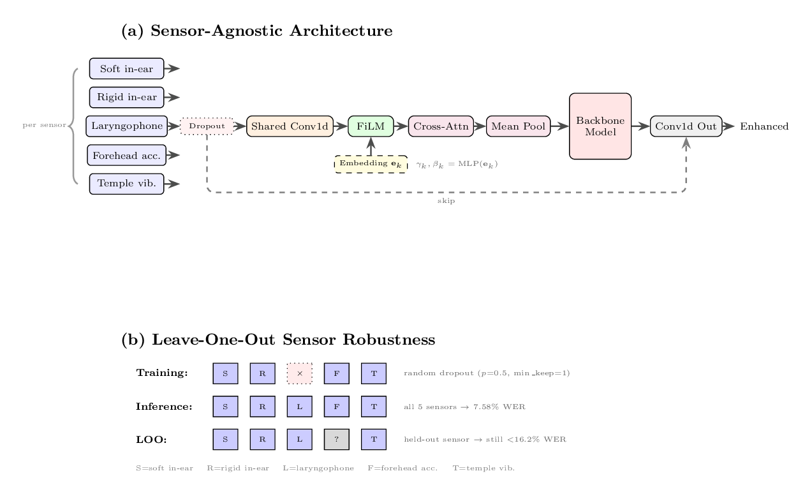
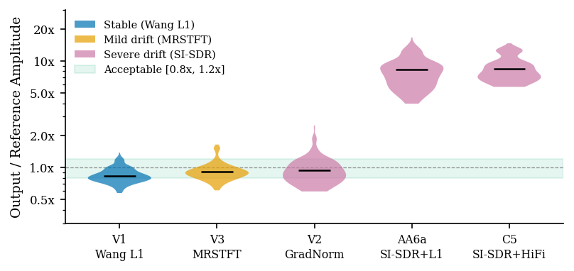
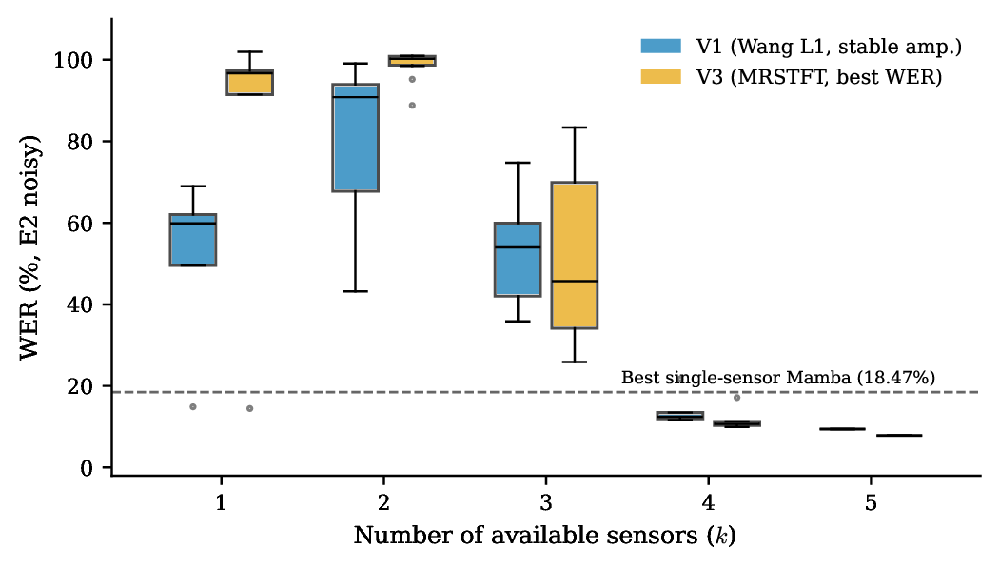
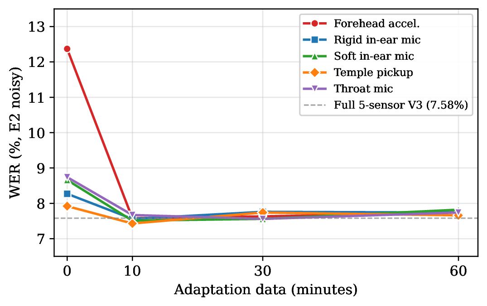
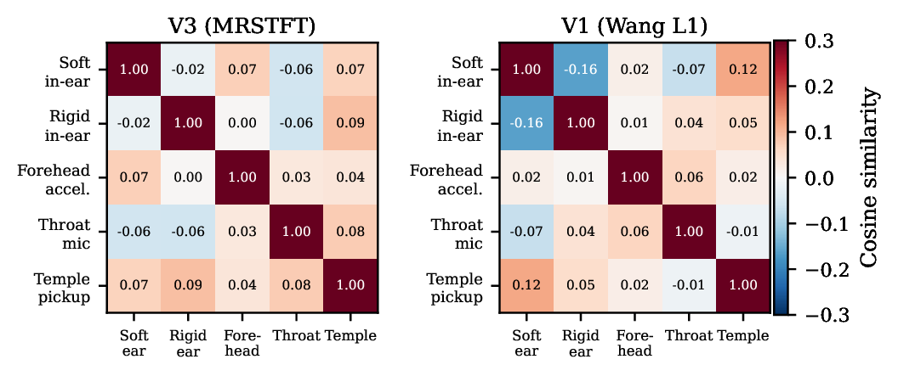

Audio demonstrations and code for anonymous NeurIPS 2026 submission. All samples are from the Vibravox test set (French speech, unseen speakers). Sample IDs match the dataset for cross-reference.

Body-conducted microphones (throat, temple, forehead, in-ear) capture speech through tissue and bone vibration. The signals are noisy and bandwidth-limited. Our model fuses any subset of these heterogeneous sensors into clean airborne-quality speech.
Input: (B, S, T) — S sensors, each a mono waveform at 16 kHz
For each sensor s:
h_s = GELU(Conv1d(x_s)) # shared frontend (same weights for all sensors)
h_s = γ(e_s) ⊙ h_s + β(e_s) # FiLM conditioning on learned sensor embedding
Sensor dropout: randomly zero sensors during training (p=0.5, min_keep=1)
Cross-attention across sensor tokens (optional)
Mean pooling across sensors → (B, T, D)
8× MambaBlock (pre-norm residual, causal, O(1) memory per step)
Optional: gated STFT spectral injection at layers [1, 3, 5]
LayerNorm → Conv1d(D, 1) + skip connection → (B, 1, T) enhanced output
3.9M parameters (base) / 5.1M (with STFT branch). Real-time on a single GPU. Causal Mamba backbone enables streaming inference.
SI-SDR, the standard loss for speech enhancement, is scale-invariant — it ignores absolute output amplitude. When input and target have different natural amplitudes (as in body-conducted → airborne conversion), this causes amplitude drift: the model learns correct waveform shape at incorrect scale, producing spectral distortion and crackling artifacts.
The figure below (from the paper) shows per-sample amplitude ratios. SI-SDR-trained models drift to up to 8.4× reference amplitude. The audio exports below use target-based normalization, so the amplitude is corrected — but the spectral distortion from training at incorrect amplitude is preserved and audible as crackling and harshness.

| Model | #0009 (4.8s) | #0011 (3.0s) | #0005 (5.4s) | #0003 (5.1s) |
|---|---|---|---|---|
| Input (body-conducted) | ||||
| Reference (airborne mic) | ||||
| Ours (Wang L1 loss) Amplitude-stable ✓ |
||||
| Ours (MRSTFT loss) Mild drift, best WER |
||||
| SI-SDR + HiFi-GAN Drifted (−18.9 dB) ✗ |
||||
| SI-SDR + 0.05×L1 Drifted (−18.2 dB) ✗ |
Body-conducted signals are bandwidth-limited and spectrally distorted — listen to the "Input" row to hear what the model receives. Different sensors capture complementary information: in-ear mics have the best bandwidth, the laryngophone captures voicing, and the forehead accelerometer provides onset energy. Fusing all five produces dramatically cleaner output than any single sensor.
| Model | Sensors | E1 WER | E2 WER | |
|---|---|---|---|---|
| Best single-sensor (Mamba) | 1 | 10.19% | 33.95% | |
| D5 Wang (single-sensor, same loss family) | 1 | 6.10% | 9.52% | |
| Ours — 5-sensor fusion (V3) | 5 | 5.78% | 7.58% | p=0.004 vs D5 |
| Model | #0096 (4.1s) | #0006 (3.7s) | #0143 (4.6s) | #0032 (3.5s) |
|---|---|---|---|---|
| Input (body-conducted, noisy) | ||||
| Reference (airborne mic) | ||||
| D5 Wang (1 sensor) WER: 9.52% |
||||
| Ours (5 sensors) WER: 7.58% |
The model is robust to sensor absence without retraining — the same weights are used, only the input sensor subset changes. Sensor dropout during training acts as implicit meta-learning over the combinatorial space of sensor subsets. Below: the same model with all 5 sensors vs. with one sensor excluded at inference.

| Model | #0078 (3.9s) | #0081 (4.0s) | #0039 (4.1s) | #0096 (4.1s) |
|---|---|---|---|---|
| Input (body-conducted, noisy) | ||||
| Reference (airborne mic) | ||||
| Ours — all 5 sensors WER: 7.58% |
||||
| Forehead accel. held out WER: 16.14% (hardest) |
||||
| Soft in-ear mic held out WER: 11.61% |
||||
| Throat mic held out WER: 11.33% |
All LOO configurations exceed the best single-sensor Mamba baseline (18.47% WER). Sample IDs correspond to the Vibravox dataset speech_noisy test split.
When a new sensor type becomes available, how much data is needed to integrate it? We evaluate a three-stage generalization hierarchy:
| Held-Out Sensor | Unknown | Known type | 10 min | 30 min | 60 min |
|---|---|---|---|---|---|
| Forehead accel. | 16.14% | 12.37% | 7.91% | 7.97% | 7.99% |
| Soft in-ear mic | 11.61% | 8.66% | 7.79% | 7.53% | 7.61% |
| Throat mic | 11.33% | 8.74% | 7.72% | 7.84% | 7.74% |
| Temple pickup | 10.92% | 7.92% | 7.75% | 7.67% | 7.59% |
| Rigid in-ear mic | 10.51% | 8.27% | 7.98% | 7.98% | 7.47% |

Key findings: 10 minutes of paired data is sufficient — all sensors converge to ~7.7–7.9% WER, matching the full 5-sensor model (7.58%). Additional data (30/60 min) provides no further improvement. Merely knowing the sensor type ("Known type" column) provides substantial improvement over the unknown baseline (e.g., forehead: 16.14% → 12.37%), because the correct FiLM modulation helps the model better weight the remaining sensors even without signal from the held-out channel.

Self-contained model architecture and inference script:
model.py — Full sensor-agnostic architecture: shared Conv1d frontend, FiLM conditioning, cross-attention, sensor dropout, Mamba backbone, optional parallel STFT branch with gated spectral injection. No external dependencies beyond PyTorch and mamba-ssm.inference.py — Load a checkpoint and enhance any combination of sensor WAV files.
pip install torch torchaudio mamba-ssm
# Inference with any subset of sensors
python code/inference.py \
--checkpoint model.pt \
--input throat.wav temple.wav forehead.wav \
-o enhanced.wav
Few-shot adaptation script (fine-tune a single embedding vector with 10 minutes of paired data) will be released upon acceptance.
Full training code and pretrained checkpoints will be released upon acceptance.